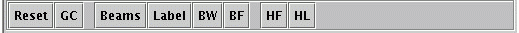

Under the File selection of the menubar, choose the desired radar
Once the VCPExplorer finishes loading (and this may take several seconds to a few minutes, depending on the speed of your computer), place your mouse on the end (away from center) of the RED radial in the PPI Panel. Left-click on the RED dot and drag the dot around the PPI. Notice the terrain (jagged line) in the RHI Panel change.Change Radar Beam Elevation Angles:
In the VCP Controls, either select the desired elevation angle or click on the (up) and (down) arrows to change the radar beam elevation angle. Notice the beam (curved line) in the RHI Panel change. Also, you can enter an elevation angle (even angles less than zero) in the "Enter Elev. Angle" box. The beam will not update until you press enter.
Enter a value in the "Beam Blockage (Whole %)" box and press enter. Then click on the "GC" button in the RHI Panel. After a few seconds, you should see a grey transparent pattern on the PPI Panel. These are areas where the radar beam is blocked greater than or equal to the percent that you enterd in the box.
Middle Button:Click and drag to manipulate. Used on: radar radial (RED dot) on PPI Panel and constant height line (GREEN dot) on RHI Panel when the Height Underestimate LINE ("HL" button) is selected.
Shift+click and drag to zoom in on the box created.
Click and drag displays Azimuth and Range of the cursor's location with respect to the radar. Also, the beam Height (ASL)at the cursor's location is also displayed.
Click and drag repositions the display.
Shift+click and drag up and down zooms in and out
Reset: Resets the display orientationRHI Panel: 
Rings: Toggles the range rings on and off
Reset: Resets the display orientation
GC: Calculates and displays Ground Clutter (Beam Blockage) on the PPI Panel.
Note: the default is set for 50% beam blockage. The user must enter a value into the
"Beam Blockage (Whole %)" box and press enter before they press the GC button.
*** Entering "101" will clear the Beam Blockage from the PPI Panel. [Will fix]
Beams: Toggles between single beam and all beams in the current VCP
Label: Toggles the elevation angle labels on and off
BW: Toggles the beam width edges on and off
BF: Toggles the beam fill on and off
HF: Toggles on and off for the Height Underestimate "FILL" display for the current VCP
HL: Toggles on and off for the Height Underestimate "LINE" display for the current VCP
Note: When this is turned on, the user can manipulate the constant height line (GREEN line)
by dragging the GREEN dot on the far right up and down. The sawtooth pattern will adjust
88D_siteList.dat:
The list of WSR-88D radar sites and respective information. This is a TAB-DELIMETED file and should be backed up if any changes are made to it. Since radar locations are rarely changed, this file should be rarely altered.TDWR_siteList.dat:
Like the 88D_siteList.dat file but for TDWR sitesvcpList.dat:
This file contains two TAB-DELIMETED columns: the VCP identifier (e.g., VCP11) and a COMMA-DELIMETED list of elevation angles. The VCPExplorer uses these entries directly to label the respective parameters in the VCP Controls area.VCPExplorer_Help.html:
This document
Haven't been able to track down this bug yet, sorry. Best thing to do is to reselect the radar.
The image should appear if you middle click in the PPI Display. If that doesn't work, try reselecting the radar.
Currently the biggest reason is that the VCPExplorer must go through the entire terrain file (usually around 800,000 grid points) and calculate an elevation angle for each point. This allows for faster rendering of Beam Blockage. It is planned to cache the elevation angle points for each radar site in the terrain netCDF files to load faster.
Most likely this is due to graphics card issues. If your graphics card does not:
support OpenGL,then this will dramatically slow down the responsiveness of te program.
have OpenGL and 3D rendering drivers installed
I'm working on that
I just though of this while writing the help menu and am looking into it.
This is partially a matter of trying to find a good way to depict the overlapping that occurs with VCP12 and other VCPs that have much overlapping. It is also an issue with the current build of Java2/3 and VisAD that this program was written in. Once we work some bugs out, I have another color/overlapping scheme in mind.
The VCPExplorer is written in Java® for platform independence and uses a Java package known as VisAD. VisAD is developed by the same folks that made Vis5D.
This program is distributed with the Sun Java2® (1.4.2) JRE as well as the Sun Java3D® (Windows®) or Blackdown Java3D® (Linux) JRE. Under Sun Licensing, the JRE's are freely distributable. VisAD is covered under GPLA.